2.7.yoloV5算法详解及案例¶
学习目标
- 了解yoloV5网络架构
- 知道yoloV5中使用的策略
- 能够使用yoloV5框架进行目标检测
**YOLO v5**是以一款叫做iDetection的APP进入人们视野的，该APP就是使用V5进行检测的。使用iOS系列的同学们，就可以立刻去下载这个app，试一下这个APP的检测效果和速度。app顶端有一系列的选项，来调节app使用的模型的大小，一般来说，较大的模型实时性差但精度高，较小的模型实时性好但精度差。另外也可以调节APP下端的置信度和IOU阈值来调整检测结果。
1. 算法简介¶
YOLO之父在2020年初宣布退出CV界，4月份YOLOv4横空出世，并收到原作者的认可。仅两个月之后，yoloV5的代码开源，自此YOLO系列进入到V5的时代。yoloV5相比于之前的yolo最大的好处是基于pytorch实现，很容易被算法工程师使用。到目前为止yoloV5已迭代了多个版本，2022年2月法发布了最新的6.1版本，接下来我们就以6.1版本为例，给大家介绍V5算法的网络结构，数据增强，后处理以及损失函数，对整个网络的基础知识进行分析：
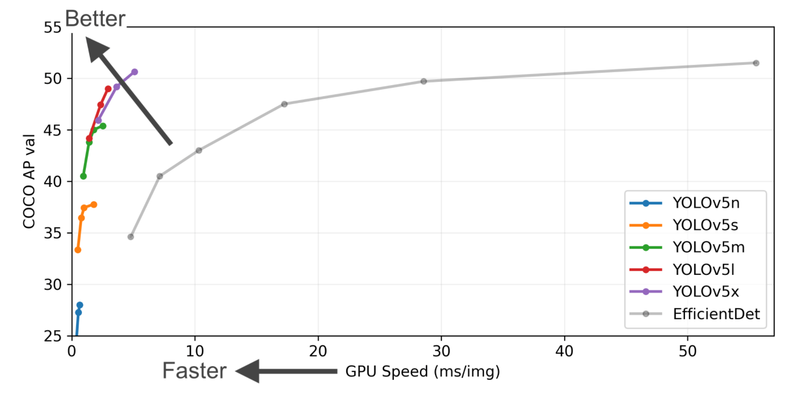
yoloV5包含多种类型的网络结构，按模型大小从小到大是yoloV5n，yoloV5s，yoloV5m，yoloV5l，yoloV5x。其中YoloV5n网络是Yolov5系列中**深度最小**，特征图的**宽度最小**的网络。后面的4种都是在此基础上不断加深，不断加宽得到的网络结构，从图中可以看出较大模型实时性差但精度高，较小的模型实时性好但精度差。
2.开源框架¶
我们从yoloV5的github中将开源代码clone下来，其代码结构如下所示：包括网络结构，训练，预测的相关内容，
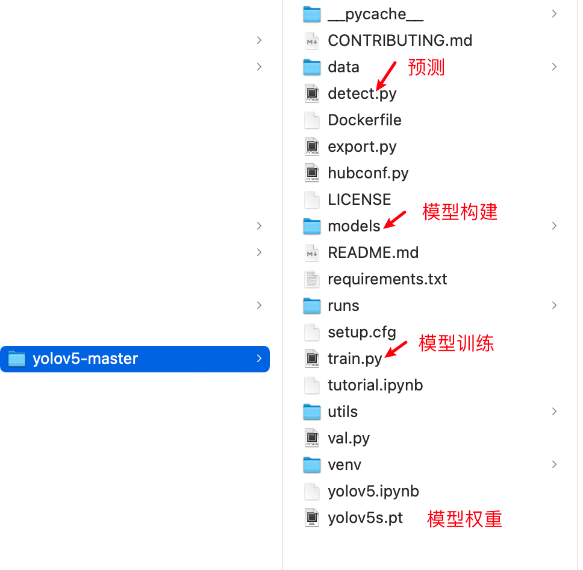
将代码获取到本地后，需要安装相应的工具包，cd到yoloV5-master的文件夹中，创建虚拟环境要求python>3.7且torch>1.7，执行：
pip install -r requirements.txt
安装完成之后即可运行代码。
在介绍网络之前我们先来看下预测结果，使用预训练的yolov5s来进行预测，该部分代码在：yolov5-master/yolov5.ipynb文件中
# 导入预测工具
import detect
# 运行预测程序：指定要预测的图片，预训练好的模型及是否显示图片
detect.run(source="data/images/img3.jpg",weights='yolov5s.pt',view_img=False)
输出结果为：
Fusing layers...
Model Summary: 213 layers, 7225885 parameters, 0 gradients, 16.5 GFLOPs
WARNING: --img-size (640, 640) must be multiple of max stride 32, updating to [640, 640]
image 1/1 /Users/mac/Desktop/计算机视觉/yolov5-master/data/images/img3.jpg: 480x640 4 persons, 1 chair, Done. (0.233s)
Speed: 1.5ms pre-process, 232.8ms inference, 3.4ms NMS per image at shape (1, 3, 640, 640)
Results saved to runs/detect/exp7
从上述结果中可以看出，整个过程是加载模型，将图片调整为640*640的大小，进行预测并后处理，将结果保存在runs/detect/exp7文件夹中，检测结果如下图所示：
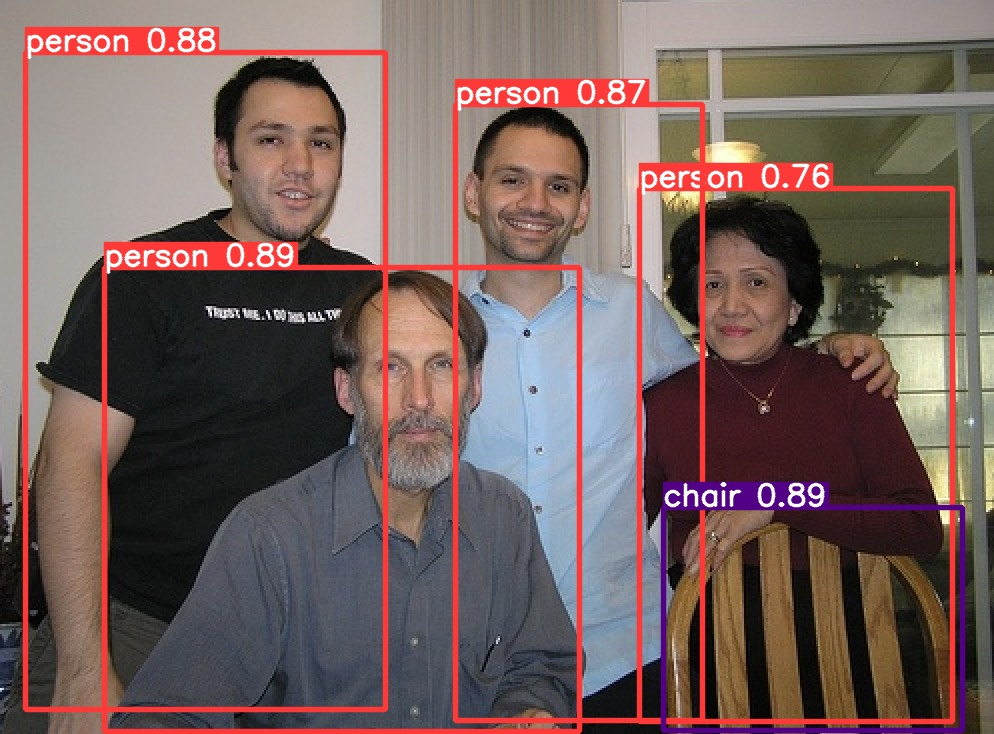
接下来我们给大家介绍下yoloV5具体是如何来完成目标检测的。
3.模型详解¶
3.1 模型结构¶
在这里我们首先来看下yoloV5的网络架构，我们依然把它分成输入，backbone,Neck和输出端四部分，如下所示：
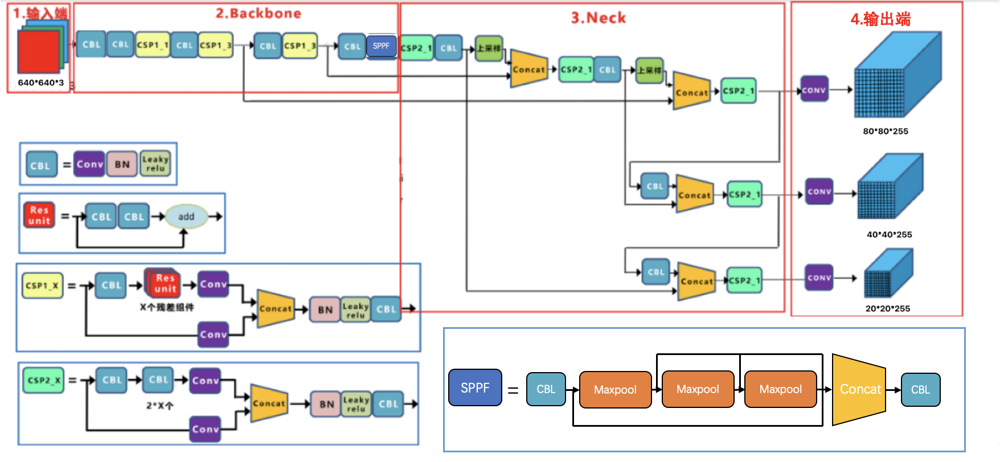
Yolov5的整体架构与YoloV4是非常相似的，在V5中使用的是leaky_relu激活函数，没有使用mish激活函数.
-
基本组件：
-
CBL：由Conv+Bn+Leaky_relu激活函数三者组成。
- Res unit：借鉴Resnet网络中的残差结构，让网络可以构建的更深。
- CSP1_X：由三个卷积层和X个Res unint模块Concate组成，模型实现使用C3来完成，将shortcut设为True即可
- CSP2_X：这个在V4中没有使用，由三个卷积层和2X个Res unint模块Concate组成，模型实现使用C3来完成，将shortcut设为False即可
-
SPPF：V4中使用的SPP进行融合，在这里采用1x1卷积和3个串联的5x5的最大池化的方式，进行多尺度融合。
-
其他基础操作：
-
Concat：张量拼接，通道维度会扩充。
- Add：张量相加，不会扩充维度。
为了更好的理解模型每一部分的作用，接下来我们按照输入端（input）,backbone, neck, 输出端（output）四部分介绍yoloV4网络的内容。
3.1.1 输入（input）¶
yoloV5网络的输入依然要求是32的倍数，但大小不是固定的，在yoloV5中默认是640×640，在实际项目中也可以根据需要进行调整。V5的预测阶段不要求送入网络中的图像是方形的，这要保证高宽都为32的倍数即可，调整策略我们介绍如下：
在这里我们先回顾下V3V4中的做法，也是V5在训练时对输入图像大小的处理方法，例如：1200x800的原始图像直接缩放填充为640x640的大小，具体操作长边1200直接缩放为640比例为0.53，短边缩放为800x0.53=426,426不足640，则在短边的方向两侧分别填充（640-426）/2 =107个灰度像素（114，114，114），如下所示：
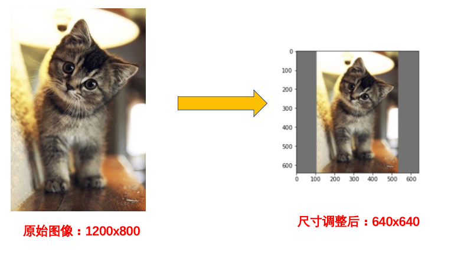
那这种方式使用时可以保证在每个batch进行训练时送入的图像大小是一样的。但是在预测时一般是送入一幅图像进行预测，而上述这种填充方式在短边填充了较多的背景像素，存在信息冗余，影响推理速度。所以在V5中进行预测时使用了自适应的填充方式，具体操作长边1200直接缩放为640比例为0.53，短边缩放为800x0.53=426,426不能被32整除所以需要在进行填充，这时我们需要找到离426最近的32的整数倍的值即426+（640-426）%32=448, 则在短边的方向两侧分别填充（448-426）/2 =11个灰度像素（114，114，114），如下所示：
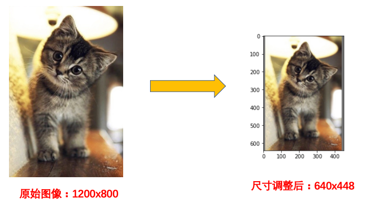
从上图中可以看出短边的填充比原始的填充方式小了很多，在推理时，计算量也会减少，目标检测的速度会得到提升。
其他的与yoloV4类似，V5在输入端采用反转、裁切、旋转，CutMix和马赛克数据增强（Mosaic data augmentation）等数据增强方式。
3.1.2 backbone¶
yoloV5网络的backbone和yoloV4是类似的，都使用的是CSP结构，在yoloV5中都是使用的leakyrelu激活函数，没有使用mish，如下图所示：
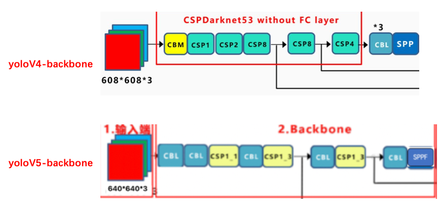
yoloV4中一共有5个CSP，输入图像是608x608，所以特征图变化的规律是：608->304->152->76->38->19，经过5次CSP模块后得到19x19大小的特征图。
而在V5中降采样通过CBL来完成，输入图像是640x640,所以特征图变化的规律是：640->320->160->80->40->20，经过5次CBL模块后得到20x20大小的特征图。
另外将V4中使用的是SPP，而在V5中使用的是SPPF，如下所示：
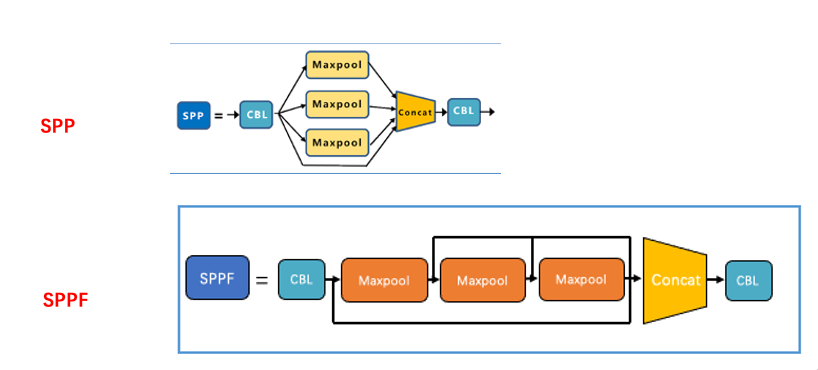
SPP层使用5x5,9x9,13x13池化窗口对特征进行融合，在送入网络neck之前能够得到更多的信息。而在SPPF使用3个5×5的最大池化，代替原来的5×5、9×9、13×13最大池化，在保证准确率的情况下，提高了计算速度。
3.1.3 neck¶
yolov5中的特征融合方式与V4的融合方式是一样的，只是将在V4中使用的部分CBL替换成了CSP2_X模块，增强了网络的特征融合能力。如下所示：
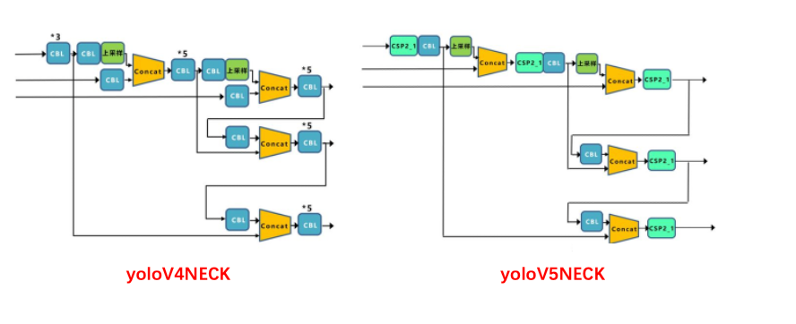
CSP2_X的模块结构如下所示：
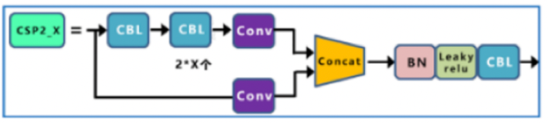
3.1.4 输出（output）¶
V5的输出端与V4V3的输出端是一样的，都是输出3个尺度的结果，具体不再赘述。
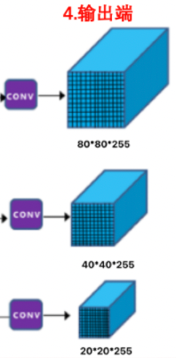
3.2 模型训练¶
yoloV5中的模型训练和YoloV4是类似的训练过程是一样的，损失函数使用GIOU损失，为了提高正样本的数量，只不过在进行正负样本设计时进行了调整。
3.2.1 anchor的自动调整¶
yoloV3和V4中的anchor是预先使用kmeans定义好的，而yoloV5中的anchor是基于训练数据自动学习的。在Yolov3、Yolov4中，训练不同的数据集时，计算初始锚框的值是通过单独的程序运行的。但Yolov5中将此功能嵌入到代码中，每次训练时，自适应的计算不同训练集中的最佳锚框值。
3.2.2 正负样本的设计¶
在yolo v3v4中，保证每个gt bbox有一个唯一的anchor进行对应，匹配规则就是IOU最大，并且某个gt不能在三个预测层的某几层上同时进行匹配。不考虑一个gt bbox对应多个anchor的场合，也不考虑anchor是否设置合理。
而在yolov5采用了跨网格匹配规则，增加正样本anchor数目的做法：对于任何一个输出层，直接采用shape规则匹配，计算当前的目标框GT宽高和每一尺度的anchor宽高的比例，如果宽高比例小于设定阈值，则说明该bbox和anchor匹配度足够，将该anchor在该尺度中认为是正样本。然后计算GT落在哪个网格内，同时利用四舍五入规则，找出最近的两个网格，将这三个网格都认为是负责预测该bbox的，可以发现粗略估计正样本数相比前yolo系列，增加了三倍。如下图所示：
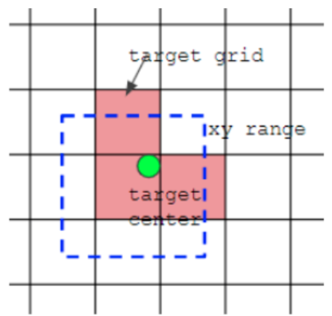
绿点表示该gt bbox中心，现在需要额外考虑其2个最近的邻域网格的anchor也作为该gt bbox的正样本，明显增加了正样本的数量。
3.3 模型预测¶
与yoloV4类似，模型训练好后，我们将图片resize后，送入到yoloV5网络中，输出3个尺度的预测结果，每个结果中包含边框坐标（4个数值），边框置信度（1个数值），对象类别的概率（对于COCO数据集，有80种对象）。我们筛选出置信度较高的检测结果（>0.5），在采用NMS算法选出最有可能是目标的结果，就完成了目标的检测。
4.案例实现¶
4.1 数据构建¶
4.1.1 标注方法¶
根据要实现的业务场景，需要收集大量的图像数据，一般来说包含两大来源，一部分是网络数据，可以是开源数据，也可以通过百度、Google图片爬虫得到，另一部分是用户场景的视频录像，这一部分的数据量会更大。对于开源数据我们不需要进行标注，而爬取的数据和视频录像需要进行标注，这时我们可以使用开源工具labelImg进行标注，安装方法是：
pip install labelImg
安装完成后再终端使用：labelImg即可启动标注程序，如下所示：
标注好信息后点击保存即可将标注信息添加到对一个的txt文件中，主要是2个人和一个领带，另外还会生成以class.txt保存目标的类别信息。
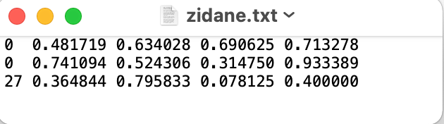
标注信息：类别，中心点x,y坐标，宽高（归一化后的），如下图所示：
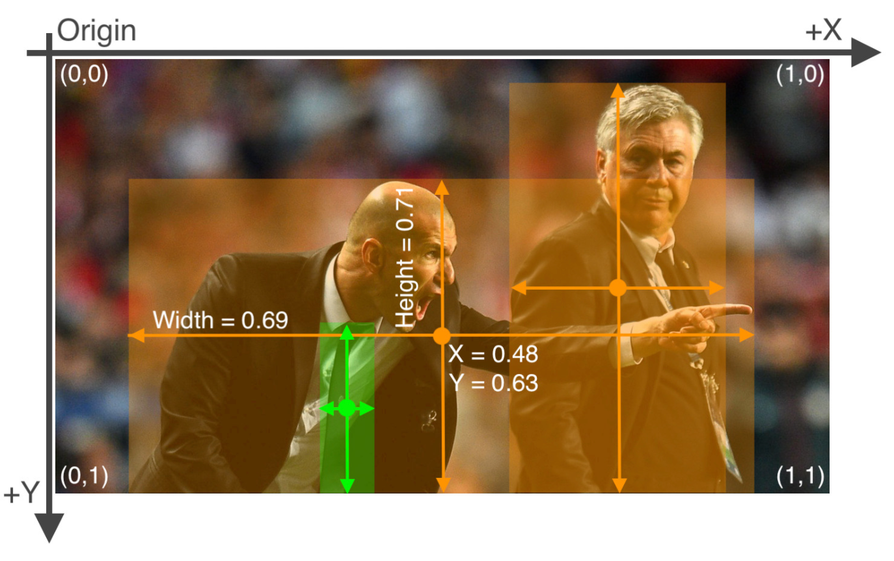
将标注好的数据集中的图片文件和文本标签分别存放在自己的文件夹中，我们以coco128数据为例：
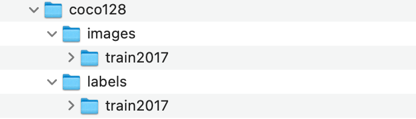
images文件夹中存放图片文件，labels中存放标签文件txt。
4.1.2 数据加载¶
在yoloV5的框架中我们进行数据加载时只需配置好yaml文件即可，我们以coco128为例，COCO128数据集是由COCO数据集的前128张图像组成的小数据集。这128张图像用于训练和验证。在这里创建coco128.yaml文件，需要配置的内容如下所示：
# 数据存放路径的配置
path: ../datasets/coco128 # 根目录
train: images/train2017 # 训练集数据的目录（根目录的相对路经）
val: images/train2017 # 验证集数据的目录（根目录的相对路经），在这里验证集和训练集是同一个
test: # 测试集，可选
# 数据集的类型信息
nc: 80 # 类别个数
names: ['person', 'bicycle', 'car', 'motorcycle', 'airplane', 'bus', 'train', 'truck', 'boat', 'traffic light',
'fire hydrant', 'stop sign', 'parking meter', 'bench', 'bird', 'cat', 'dog', 'horse', 'sheep', 'cow',
'elephant', 'bear', 'zebra', 'giraffe', 'backpack', 'umbrella', 'handbag', 'tie', 'suitcase', 'frisbee',
'skis', 'snowboard', 'sports ball', 'kite', 'baseball bat', 'baseball glove', 'skateboard', 'surfboard',
'tennis racket', 'bottle', 'wine glass', 'cup', 'fork', 'knife', 'spoon', 'bowl', 'banana', 'apple',
'sandwich', 'orange', 'broccoli', 'carrot', 'hot dog', 'pizza', 'donut', 'cake', 'chair', 'couch',
'potted plant', 'bed', 'dining table', 'toilet', 'tv', 'laptop', 'mouse', 'remote', 'keyboard', 'cell phone',
'microwave', 'oven', 'toaster', 'sink', 'refrigerator', 'book', 'clock', 'vase', 'scissors', 'teddy bear',
'hair drier', 'toothbrush'] # 类别名称
数据集配置文件,定义了:
-
训练图像的路径
-
验证图像的路径
-
类的数量
-
类名称的列表
配置好这些信息后yoloV5的框架会自动的加载这些数据进行训练。
4.2 模型选择（构建）¶
在yoloV5中构建网络时通过yaml文件进行配置，用来获取不同大小类型的模型，配置文件在文件夹yolov5-master/models文件夹中，如下所示：包含yoloV5n，yoloV5s，yoloV5m，yoloV5l，yoloV5x的配置信息：
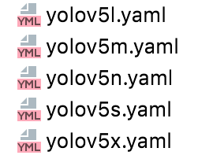
在这里我们以yoloV5s为例，来分析下配置文件中的内容，主要包含三部分内容：
- 模型参数
# 模型参数
nc: 80 # 类别个数
# 不同大小的模型只要配置这两个参数即可
depth_multiple: 0.33 # 模型深度的比例，即网络层数的比例
width_multiple: 0.50 # 模型宽度的比例，即网络每一层深度的比例
# anchor的设置，与yoloV3是一样的
anchors:
- [ 10,13, 16,30, 33,23 ] # P3/8
- [ 30,61, 62,45, 59,119 ] # P4/16
- [ 116,90, 156,198, 373,326 ] # P5/32
不同大小模型的深度和宽度的比例如下图所示：
| yoloV5n | yoloV5s | yoloV5m | yoloV5l | yoloV5x | |
|---|---|---|---|---|---|
| 深度比例 | 0.33 | 0.33 | 0.67 | 1 | 1.33 |
| 宽度比例 | 0.25 | 0.50 | 0.75 | 1 | 1.25 |
从上表中可以看出，从yoloV5n到yoloV5x是逐渐变大的。
- backbone的设置
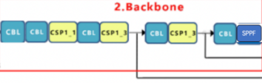
backbone指特征提取部分，以列表的形式进行配置，每一部分以[from, number, module, args]的方式配置一个组件，其中：
-
from 表示该层的输入从哪来。-1表示输入取自上一层，-2表示上两层，3表示第3层（从0开始数），[-1, 4]表示取自上一层和第4层，依次类推。。。从0开始，每一行表示一层，例如0-P½表示第0层，特征图尺寸为输入的½。
-
number 表示该层模块堆叠的次数，最终的次数还要乘上depth_multiple系数
- module 表示该层的模块。Conv表示卷积+BN+激活模块。C3表示csp1_x结构。
- args 表示输入到模块的参数。例如Conv：[128, 3, 2] 表示输出通道128，卷积核尺寸3，stride=2；C3模块：[1024],表示通道数为1024，最终的输出通道数还要乘上 width_multiple，
# 在配置文件中将模型结果分为backbone和head两部分：
backbone:
# [from, number, module, args]
[ [ -1, 1, Conv, [ 64, 6, 2, 2 ] ], # 0-P1/2 [64, 6, 2, 2 ] 表示输出通道128，卷积核尺寸3，stride=2，padding=2
[ -1, 1, Conv, [ 128, 3, 2 ] ], # 1-P2/4 [128, 3, 2] 表示输出通道128，卷积核尺寸3，stride=2
[ -1, 3, C3, [ 128 ] ], # 指csp1_x组件,其中1024表示通道数为1024
[ -1, 1, Conv, [ 256, 3, 2 ] ], # 3-P3/8
[ -1, 6, C3, [ 256 ] ],
[ -1, 1, Conv, [ 512, 3, 2 ] ], # 5-P4/16
[ -1, 9, C3, [ 512 ] ],
[ -1, 1, Conv, [ 1024, 3, 2 ] ], # 7-P5/32
[ -1, 3, C3, [ 1024 ] ],
[ -1, 1, SPPF, [ 1024, 5 ] ], # 9 [ 1024, 5 ]表示输出通道数为1025，池化窗口为5。
]
- head的设置
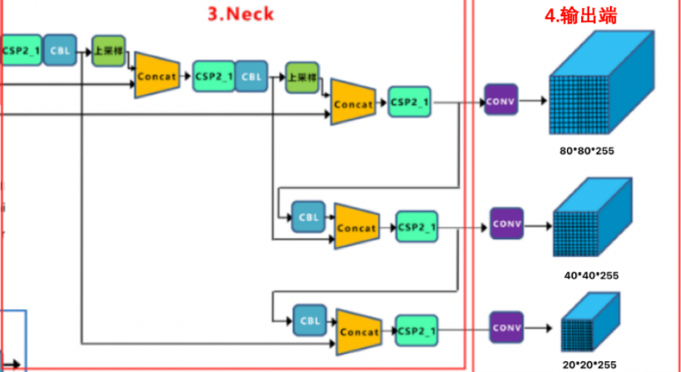
Head指neck和output两部分，以列表的形式进行配置，每个模块的配置与backbone中是一样的。
head:
# [from, number, module, args]
[ [ -1, 1, Conv, [ 512, 1, 1 ] ],
[ -1, 1, nn.Upsample, [ None, 2, 'nearest' ] ], # nn.Upsample模块的参数[ None, 2, 'nearest' ] None表示通道数与输入通道相同，2表示上采样倍数，'nearest'表示差值方法
[ [ -1, 6 ], 1, Concat, [ 1 ] ], # 表示上一层输出与第6层输出进行concat融合，最后[ 1 ]表示特征图的长宽不发生变化
[ -1, 3, C3, [ 512, False ] ], # 13
[ -1, 1, Conv, [ 256, 1, 1 ] ],
[ -1, 1, nn.Upsample, [ None, 2, 'nearest' ] ],
[ [ -1, 4 ], 1, Concat, [ 1 ] ], # cat backbone P3
[ -1, 3, C3, [ 256, False ] ], # 17 (P3/8-small) 表示csp2_3, 256表示通道数，False表示不使用残差模块
[ -1, 1, Conv, [ 256, 3, 2 ] ],
[ [ -1, 14 ], 1, Concat, [ 1 ] ], # cat head P4
[ -1, 3, C3, [ 512, False ] ], # 20 (P4/16-medium)
[ -1, 1, Conv, [ 512, 3, 2 ] ],
[ [ -1, 10 ], 1, Concat, [ 1 ] ], # cat head P5
[ -1, 3, C3, [ 1024, False ] ], # 23 (P5/32-large)
[ [ 17, 20, 23 ], 1, Detect, [ nc, anchors ] ], # Detect(P3, P4, P5) 输出层设置：【17，20，23】表示输入层，nc表示类别个数，anchors表示anchor的设置
]
上述就是我们在V5中构建模型的方式，构建好模型后我们就可以利用训练集数据对其进行训练
4.3 模型训练¶
数据集和模型准备好之后，我们就可以进行训练，训练的实现过程如下所示：
# 导入模型训练
import train
# 模型训练：设置相应的参数：模型配置信息
train.run(cfg='models/yolov5s.yaml', # 模型结构的配置文件
data='data/coco128.yaml', # 数据的配置文件
imgsz=640, # 图像大小
batch_size=2, # 批次大小
weights='yolov5s.pt', # 预训练模型
epochs=1, # 训练轮次
worker=1 # 数据加载的线程数，根据硬件资源进行设置
)
训练结果如下所示：
train: weights=yolov5s.pt, cfg=models/yolov5s.yaml, data=data/coco128.yaml, hyp=data/hyps/hyp.scratch-low.yaml, epochs=1, batch_size=2, imgsz=640, rect=False, resume=False, nosave=False, noval=False, noautoanchor=False, evolve=None, bucket=, cache=None, image_weights=False, device=, multi_scale=False, single_cls=False, optimizer=SGD, sync_bn=False, workers=8, project=runs/train, name=exp, exist_ok=False, quad=False, cos_lr=False, label_smoothing=0.0, patience=100, freeze=[0], save_period=-1, local_rank=-1, entity=None, upload_dataset=False, bbox_interval=-1, artifact_alias=latest, worker=1, lr=0.01
hyperparameters: lr0=0.01, lrf=0.01, momentum=0.937, weight_decay=0.0005, warmup_epochs=3.0, warmup_momentum=0.8, warmup_bias_lr=0.1, box=0.05, cls=0.5, cls_pw=1.0, obj=1.0, obj_pw=1.0, iou_t=0.2, anchor_t=4.0, fl_gamma=0.0, hsv_h=0.015, hsv_s=0.7, hsv_v=0.4, degrees=0.0, translate=0.1, scale=0.5, shear=0.0, perspective=0.0, flipud=0.0, fliplr=0.5, mosaic=1.0, mixup=0.0, copy_paste=0.0
。。。。
AutoAnchor: 4.27 anchors/target, 0.994 Best Possible Recall (BPR). Current anchors are a good fit to dataset ✅
Image sizes 640 train, 640 val
Using 2 dataloader workers
Logging results to runs/train/exp4
Starting training for 1 epochs...
Epoch gpu_mem box obj cls labels img_size
0%| | 0/64 [00:13<?, ?it/s]
在训练过程中会进行数据的增强，anchor的调整，训练信息的处理等，这些信息会被保存在run/train/expX中，如下所示：
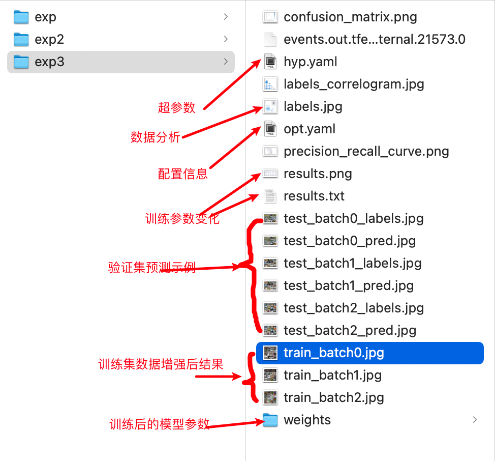
接下来我们分析一下这些结果：
- opt.yaml中的超参数主要指学习率，优化器，阈值等一系列的参数，保存训练过程中的hyperparameters的参数。
# 学习率设置
lr0: 0.01
lrf: 0.2
momentum: 0.937
# 学习率预热
weight_decay: 0.0005
warmup_epochs: 3.0
warmup_momentum: 0.8
warmup_bias_lr: 0.1
# 损失函数的参数
box: 0.05
cls: 0.5
cls_pw: 1.0
obj: 1.0
obj_pw: 1.0
iou_t: 0.2
anchor_t: 4.0
fl_gamma: 0.0
# 数据增强的参数
hsv_h: 0.015
hsv_s: 0.7
hsv_v: 0.4
degrees: 0.0
translate: 0.1
scale: 0.5
shear: 0.0
perspective: 0.0
flipud: 0.0
fliplr: 0.5
mosaic: 1.0
mixup: 0.0
- opt.yaml中的配置信息包括批次大小，轮次等，在训练过程中train的参数信息，如下所示：
# 模型配置信息
weights: yolov5s.pt
cfg: 'yolov5s.yaml'
# 数据
data: data/coco128.yaml
# 训练参数
hyp: data/hyp.scratch.yaml
epochs: 20
batch_size: 16
img_size:
- 640
- 640
。。。。
- 数据分析的结果，在这里对标注框类别，中心点坐标及标注框宽高的分布进行了分析，如下所示：
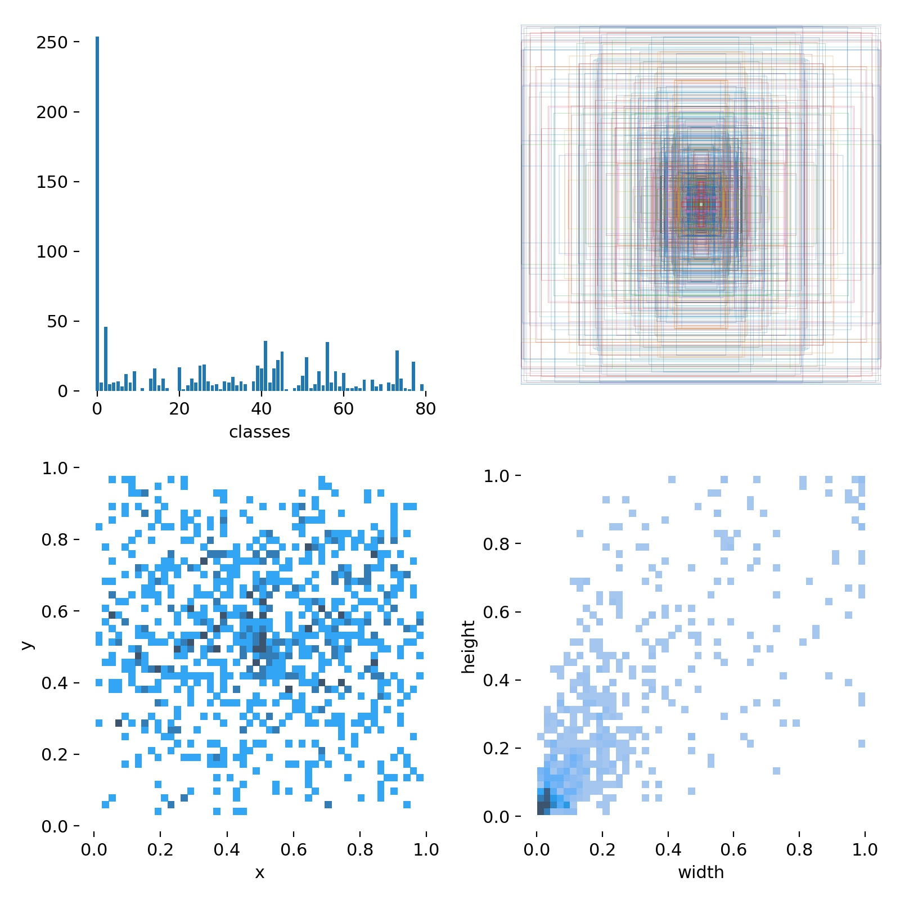
- 送入网络中训练集数据如下所示：该图中显示了当前送入网络中16幅图像，从中可以看出进行了masic的增强处理
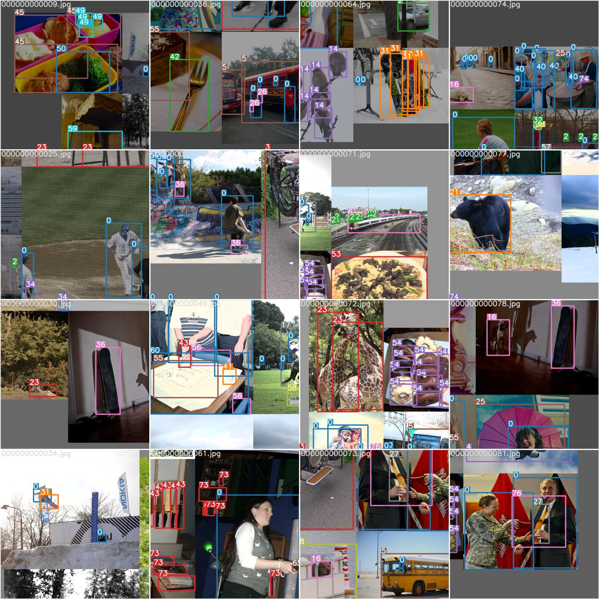
- 在训练过程中对验证集数据预测结果，来对比下预测和真实值结果：
真实标注的结果：
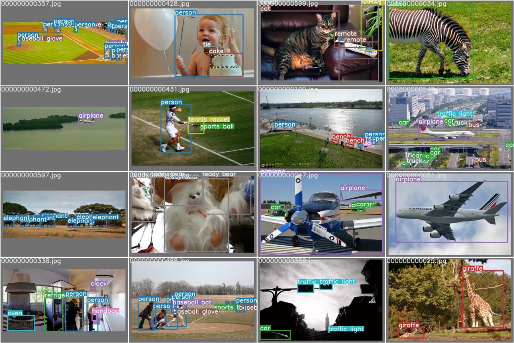
网络预测结果：
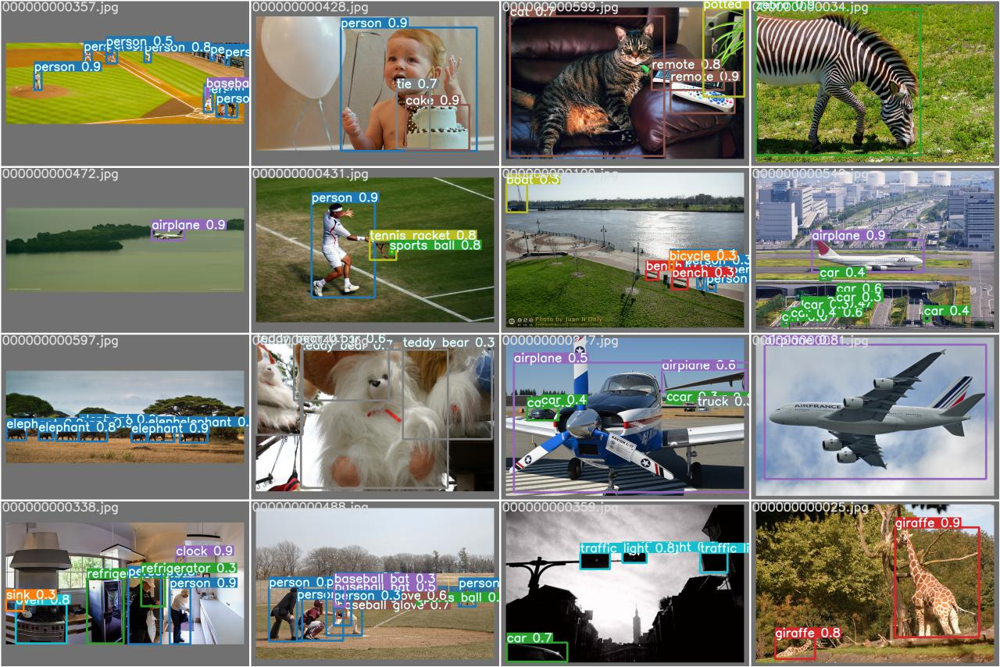
对比两幅图像可以发现，虽然有些目标没有被检测到，但是大部分目标模型都检测出来了
- 训练过程中损失函数，准确率的变化情况如下所示：
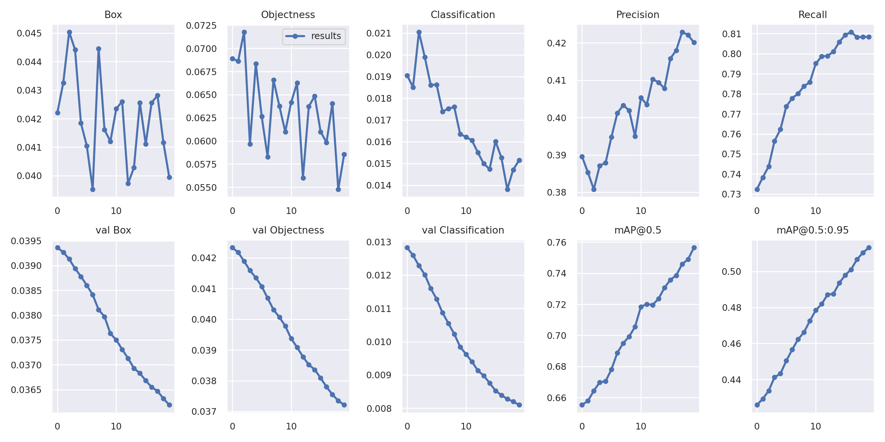
在这里是训练了20个轮次的结果，从这个结果中可以看出，随着训练的进行损失是在不断下降的，而准确率是在不断提升的。由于在这个例子中验证集和训练集使用的是相同的数据，所以验证集的曲线变化更平滑一些。
- 模型训练权重的保存结果，在weights文件夹中保存了最后一个轮次的训练结果last.pt和验证集精度最高的结果best.pt,如下所示：
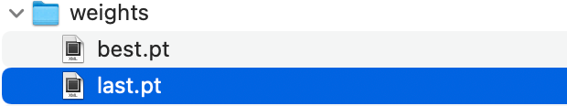
到这里模型就被我们训练好了，就可以使用权重参数进行预测了。
4.4 模型预测¶
模型预测的方法与本章开头是一样的，使用detect来进行预测，加载刚训练好的模型参数如下所示：
# 导入预测工具
import detect
# 运行预测程序：指定要预测的图片，预训练好的模型及是否显示图片
detect.run(source="data/images/img3.jpg",weights='runs/train/exp3/weights/best.pt',view_img=False)
我们依然对前面图像进行预测，结果为：
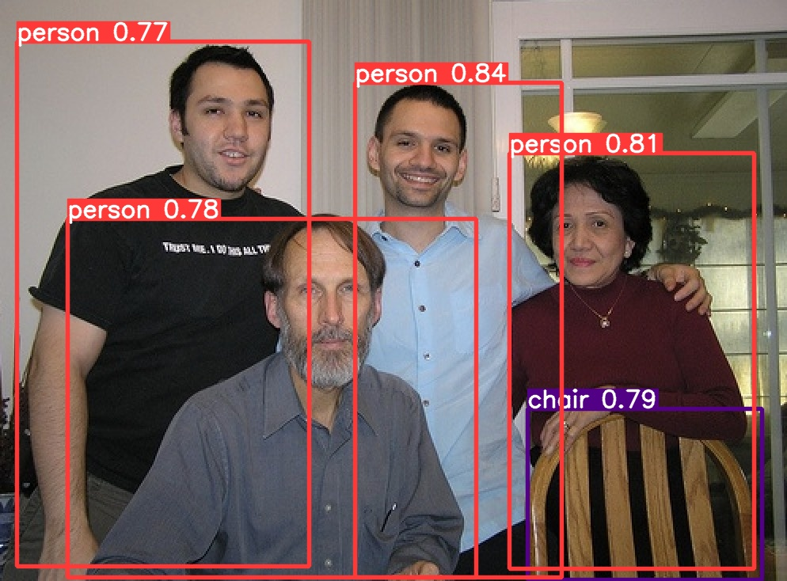
在这里我们依然可以将图像中的目标检测出来。
总结
- 了解yoloV5网络架构
输入，backbone，neck，output
- 知道yoloV5中使用的策略
图像尺寸的调整，图像增强方法，正负样本的设置等。
- 能够使用yoloV5框架进行目标检测